Custom Authentication
Custom authentication¶
For some situations, the social or enterprise flows are not valid for the mobile client. Perhaps you want the ability to provide a sign-up process with a username and password rather than using a social provider. Perhaps you want to use an alternate provider that is not one of the supported five providers. Whatever the reason, Azure App Service provides the ability to handle all situations. In this section, I will look at three methods for providing a unique set of usernames with no connection to the social or enterprise authentication.
Using an Identity Database.¶
Probably the most common request is to use a custom identity database. In general, this is desirable because you already have a database of usernames and password. However, it's probably the least desirable option because of the security concerns that come along with this technique. The news is rife with password leakage for very large organizations. The best way to ensure you do not disclose a users password is to not have it in the first place.
Warn
I'm not going to cover the sign-up case here. This would be an additional process and would use a regular Web API to insert data into the database after validation (and probably verification via email or text message).
The first thing we need to add to our project is a model for the user object. I created the following in the Models
folder of the Backend project:
using System.ComponentModel.DataAnnotations;
namespace Backend.Models
{
public class User
{
[Key]
public int Id { get; set; }
public string Username { get; set; }
public string Password { get; set; }
}
}
We also need to modify the MobileServiceContext.cs file so that the database table is included in the Entity Framework
context:
public class MobileServiceContext : DbContext
{
private const string connectionStringName = "Name=MS_TableConnectionString";
public MobileServiceContext() : base(connectionStringName)
{
}
public DbSet<TodoItem> TodoItems { get; set; }
public DbSet<User> Users { get; set; }
protected override void OnModelCreating(DbModelBuilder modelBuilder)
{
modelBuilder.Conventions.Add(
new AttributeToColumnAnnotationConvention<TableColumnAttribute, string>(
"ServiceTableColumn", (property, attributes) => attributes.Single().ColumnType.ToString()));
}
}
Finally, we probably want to put some seed data into the database when it is first created so that we can test it.
Adjust the MobileServiceInitializer in the Startup.MobileApp.cs file:
protected override void Seed(MobileServiceContext context)
{
List<TodoItem> todoItems = new List<TodoItem>
{
new TodoItem { Id = Guid.NewGuid().ToString(), Text = "First item", Complete = false },
new TodoItem { Id = Guid.NewGuid().ToString(), Text = "Second item", Complete = false }
};
foreach (TodoItem todoItem in todoItems)
{
context.Set<TodoItem>().Add(todoItem);
}
List<User> users = new List<User>
{
new User { Id = 1, Username = "adrian", Password = "supersecret" }
};
foreach (User user in users)
{
context.Set<User>().Add(user);
}
base.Seed(context);
}
Note that we are storing the passwords in plain text. This is most definitely frowned upon. We should be using some
sort of encryption. This code is most definitely just for demonstration purposes. Continuing the code on the backend,
we need to handle the request to authenticate from the client. We will use a custom API controller for this; it is
located in Controllers\CustomAuthController.cs:
using System;
using System.IdentityModel.Tokens;
using System.Linq;
using System.Security.Claims;
using System.Web.Http;
using Backend.Models;
using Microsoft.Azure.Mobile.Server.Login;
using Newtonsoft.Json;
namespace Backend.Controllers
{
[Route(".auth/login/custom")]
public class CustomAuthController : ApiController
{
private MobileServiceContext db;
private string signingKey, audience, issuer;
public CustomAuthController()
{
db = new MobileServiceContext();
signingKey = Environment.GetEnvironmentVariable("WEBSITE_AUTH_SIGNING_KEY");
var website = Environment.GetEnvironmentVariable("WEBSITE_HOSTNAME");
audience = $"https://{website}/";
issuer = $"https://{website}/";
}
[HttpPost]
public IHttpActionResult Post([FromBody] User body)
{
if (body == null || body.Username == null || body.Password == null ||
body.Username.Length == 0 || body.Password.Length == 0)
{
return BadRequest(); ;
}
if (!IsValidUser(body))
{
return Unauthorized();
}
var claims = new Claim[]
{
new Claim(JwtRegisteredClaimNames.Sub, body.Username)
};
JwtSecurityToken token = AppServiceLoginHandler.CreateToken(
claims, signingKey, audience, issuer, TimeSpan.FromDays(30));
return Ok(new LoginResult()
{
AuthenticationToken = token.RawData,
User = new LoginResultUser { UserId = body.Username }
});
}
protected override void Dispose(bool disposing)
{
if (disposing)
{
db.Dispose();
}
base.Dispose(disposing);
}
private bool IsValidUser(User user)
{
return db.Users.Count(u => u.Username.Equals(user.Username) && u.Password.Equals(user.Password)) > 0;
}
}
public class LoginResult
{
[JsonProperty(PropertyName = "authenticationToken")]
public string AuthenticationToken { get; set; }
[JsonProperty(PropertyName = "user")]
public LoginResultUser User { get; set; }
}
public class LoginResultUser
{
[JsonProperty(PropertyName = "userId")]
public string UserId { get; set; }
}
}
There is a lot going on here:
- The constructor reads the signing key and other information that we need for constructing the JWT. Note that the signing key is only available if you have the Authentication / Authorization is turned on.
- The
LoginResultandLoginResultUserprovide the response to the client, when serialized by the JSON serializer. - The
Post()method is where the work happens. It verifies that you have a valid object, then checks that the username and password match something in the user database. It then constructs the JWT and returns the required JSON object. - The
IsValidUser()method actually validates the username and password provided in the request with the users in the database. This version is very simplistic. I expect your version to at least include encryption of the password.
Warn
You must turn on Authentication / Authorization in your App Service. Set the Action to take when request is not authenticated to Allow Request (no action) and do not configure any of the supported authentication providers.
You can add additional claims in the token that is passed back to the client by adding additional rows to the claims
object. For example:
var claims = new Claim[]
{
new Claim(JwtRegisteredClaimNames.Sub, body.Username),
new Claim("foo", "Value for Foo")
};
For example, you could do a custom authentication that includes group information, permissions structures, or
additional information about the user from the directory. Claim names are normally three letters and the value
is always a string. It is normal to create a class (just like the JwtRegisteredClaimNames) with the strings
in it that can be shared between the client and server projects:
public static class LocalClaimNames
{
public string MainUser => "mus"
};
The only claim that must be present is the "sub" claim (referenced here by JwtRegisteredClaimNames.Sub claim
type). The token, when encoded, must fit in a HTTP header. For Windows systems based on IIS, the maximum size
of a header is 16Kb. For Linux systems based on Apache, the maximum size of a header is 8Kb. The server will
return 413 Entity Too Large if the header is too long. The token is also transmitted with every single
request so you should make efforts to reduce the size of the token. It is better to make two requests initially
(one request for the token followed by an authenticated request for the extra information) than to include the
extra information in the token.
Next, we need to wire the custom authentication controller so that it appears in the same place as all the other
authenticators. We are going to access it via the /.auth/login/custom endpoint. The normal ASP.NET methods can be
applied for this. In this project, we can enable attribute routing:
public static void ConfigureMobileApp(IAppBuilder app)
{
HttpConfiguration config = new HttpConfiguration();
new MobileAppConfiguration()
.AddTablesWithEntityFramework()
.ApplyTo(config);
// Map routes by attribute
config.MapHttpAttributeRoutes();
// Use Entity Framework Code First to create database tables based on your DbContext
Database.SetInitializer(new MobileServiceInitializer());
MobileAppSettingsDictionary settings = config.GetMobileAppSettingsProvider().GetMobileAppSettings();
if (string.IsNullOrEmpty(settings.HostName))
{
app.UseAppServiceAuthentication(new AppServiceAuthenticationOptions
{
SigningKey = ConfigurationManager.AppSettings["SigningKey"],
ValidAudiences = new[] { ConfigurationManager.AppSettings["ValidAudience"] },
ValidIssuers = new[] { ConfigurationManager.AppSettings["ValidIssuer"] },
TokenHandler = config.GetAppServiceTokenHandler()
});
}
app.UseWebApi(config);
}
At this point, we can deploy the backend to the App Service and send a suitably formed POST request to the backend. I use [Postman][19] for this purpose. The request:
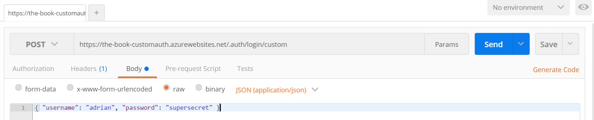
A successful POST will return the token and user ID in the response:
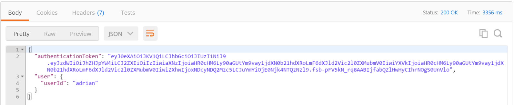
Any other request (such as no body or a wrong username or password) should produce the right response. If the body is correct, but the information is wrong, then a 401 Unauthorized response should be produced. If the body is invalid, then 400 Bad Request should be produced.
Info
The format of the response is exactly the same as the token response we saw earlier when we were discussing the contents of a JWT.
We can now turn our attention to the mobile client. Custom Authentication is always implemented using a client-flow
mechanism. To implement this, we are going to adjust the entry page so that the username and password fields are
displayed. The gathered username and password will then be passed to a new ICloudService LoginAsync() method.
All of the UI work is done in the shared project.
To start, we need a copy of the User.cs model from the backend project. Unlike Data Transfer Objects, this model is
the same:
namespace TaskList.Models
{
public class User
{
public string Username { get; set; }
public string Password { get; set; }
}
}
The abstraction we use for the cloud service needs to be adjusted so that we can pass the user object into the login
method. This is the Abstractions\ICloudService.cs interface:
using System.Threading.Tasks;
using TaskList.Models;
namespace TaskList.Abstractions
{
public interface ICloudService
{
ICloudTable<T> GetTable<T>() where T : TableData;
Task LoginAsync();
Task LoginAsync(User user);
}
}
I am adding a new version of the LoginAsync() method. The concrete version of this method no longer has to go
through the dependency service since I can use shared code. Here is the definition of our new LoginAsync()
method in Services\AzureCloudService.cs:
public Task LoginAsync(User user)
{
return client.LoginAsync("custom", JObject.FromObject(user));
}
Finally, we need to update the view-model ViewModels\EntryPageViewModel.cs so that we can store the username and
password in the model. We will also update the call to the LoginAsync() method of the cloud service so it calls
our new method:
using System;
using System.Diagnostics;
using System.Threading.Tasks;
using TaskList.Abstractions;
using TaskList.Helpers;
using TaskList.Models;
using Xamarin.Forms;
namespace TaskList.ViewModels
{
public class EntryPageViewModel : BaseViewModel
{
public EntryPageViewModel()
{
Title = "Task List";
User = new Models.User { Username = "", Password = "" };
}
Command loginCmd;
public Command LoginCommand => loginCmd ?? (loginCmd = new Command(async () => await ExecuteLoginCommand()));
public Models.User User { get; set; }
async Task ExecuteLoginCommand()
{
if (IsBusy)
return;
IsBusy = true;
try
{
var cloudService = ServiceLocator.Instance.Resolve<ICloudService>();
await cloudService.LoginAsync(User);
Application.Current.MainPage = new NavigationPage(new Pages.TaskList());
}
catch (Exception ex)
{
Debug.WriteLine($"[ExecuteLoginCommand] Error = {ex.Message}");
}
finally
{
IsBusy = false;
}
}
}
}
There are three new pieces here. Firstly, we have the User property (for holding the username and password in our
form). Next, the constructor initializes the user object to an empty object. Finally, the call to LoginAsync()
passes the user object to the cloud service.
We also need some UI changes. Specifically, we need a couple of fields for the username and password added to the
Pages\EntryPage.xaml file:
<?xml version="1.0" encoding="utf-8" ?>
<ContentPage x:Class="TaskList.Pages.EntryPage"
xmlns="http://xamarin.com/schemas/2014/forms"
xmlns:x="http://schemas.microsoft.com/winfx/2009/xaml"
Title="{Binding Title}">
<ContentPage.Content>
<StackLayout HorizontalOptions="Center"
Orientation="Vertical"
VerticalOptions="Center">
<Label Text="Username?" />
<Entry Text="{Binding User.Username}" />
<Label Text="Password?" />
<Entry IsPassword="True" Text="{Binding User.Password}" />
<Button BackgroundColor="Teal"
BorderRadius="10"
Command="{Binding LoginCommand}"
Text="Enter The App"
TextColor="White" />
</StackLayout>
</ContentPage.Content>
</ContentPage>
There is lots to complain about in this demonstration (including lack of encryption, storage of passwords, and a generally bad UI). However, it serves to demonstrate the salient points for using a (perhaps pre-existing) identity database for authentication of the users.
Using Azure Active Directory B2C¶
Custom authentication allows you to really customize the process, but I like to reduce the amount of code I write by using services or libraries. The whole sign-in and sign-up process is ripe for this sort of reduction. The code needed for building the sign-in / sign-up process is boiler-plate code. It also introduces problems that I have to deal with going forward. I have to store passwords and profile information, which introduces a security concern. I have to scale the database and ensure my app scales with it as my app gets popular. Finally, I am being fairly inflexible and causing potential privacy concerns with my users.
There are a couple of services that I can use to get around these concerns. The first is an Azure service: Azure Active Directory B2C. The B2C stands for Business to Consumer. It is a mechanism by which you can add a sign-in and sign-up flow to your application. The user can enter a username or password, or, at your option, add on support for one or more social providers. In addition, there is support for branding the sign-in process, doing email verification of sign-ups and automatic password resets via email. The Azure AD B2C sign-in / sign-up process is primarily a server-flow process, so we will be able to add support in our app with just one line of code.
The Minimal Setup of Azure AD B2C¶
Azure AD is managed from the Classic Azure Portal, so start by logging in using your Azure Subscription credentials.
- Click the big + NEW button in the bottom left of the screen.
- Select App Services -> Active Directory -> Directory -> Custom Create.
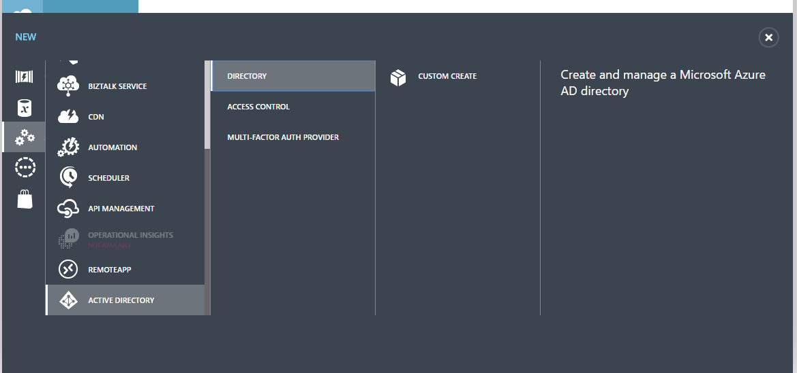
- Choose a name for the tenant, then choose a unique domain name (which will appear in the onmicrosoft.com domain) and country. Ensure you check the This is a B2C directory.
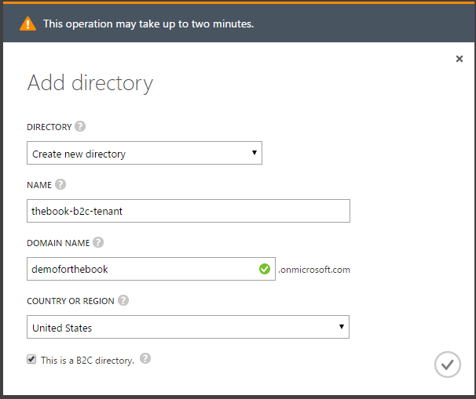
- Click the tick to create the directory. As noted, this process will take a couple of minutes to complete.
This creates a new tenant for you to manage. If you go back to your Azure Portal and click your name (top right corner), you will note that there is a new DIRECTORY entry for your B2C tenant. This is where you will be managing your B2C tenant.
It's a good idea to pin the B2C settings blade to your dashboard or navigation pane so you can access it faster. To do this:
- Log in to the Azure Portal.
- Switch to your B2C tenant by clicking on your name, then selecting the new tenant in the drop-down. (The portal may ask you to re-confirm your ID and password)
- Click More services> in the left-hand navigation bar.
- Search for B2C.
- Click the empty star next to Azure AD B2C.
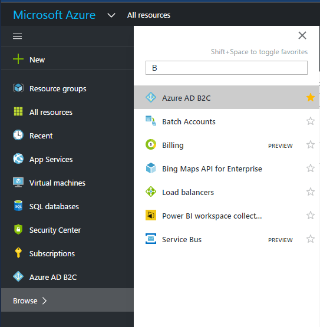
This will make Azure AD B2C appear in your left hand navigation bar. To place it on the dashboard, click on Azure AD B2C in the left hand navigation bar, then click the pin at the top of the AZURE AD B2C SETTINGS blade.
We also need to link the B2C tenant to an Azure subscription that can be billed. If you see an orange banner across the top of the Azure AD BC Settings, then click it to find the simple 3-step process to link the service. Once that is done, return to the the B2C tenant.
Warn
The process for creating a B2C tenant may change over time. If you find these instructions don't work, consult the official documentation on docs.microsoft.com.
The next job is to create an application registration within the B2C tenant:
- Open the Azure AD B2C from your dashboard or the left hand navigation.
- In the Settings blade, click Applications.
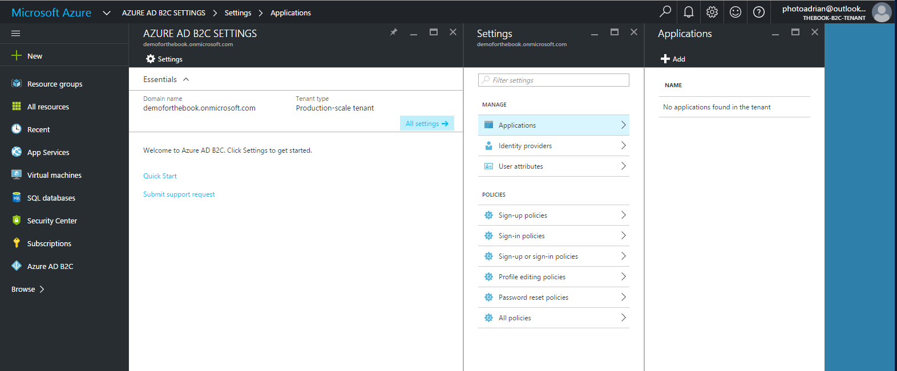
- Click + ADD to add a new application.
- In the New application blade:
- Enter a unique name for the application.
- Click Yes under Include web app / web API.
- In the Reply URL, enter
https://yoursite.azurewebsites.net/.auth/login/aad/callback.
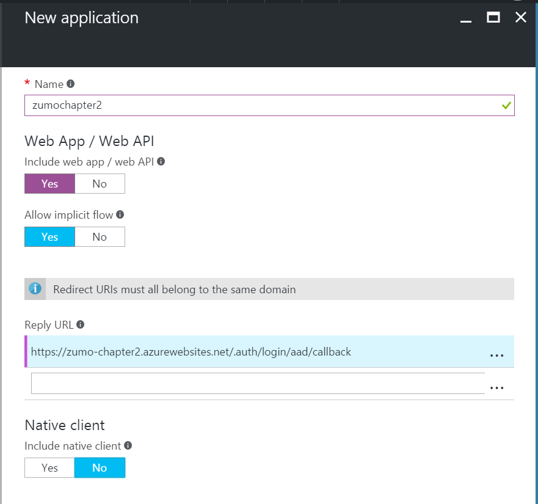
- Click OK.
There is no spinner or deployment here. After approximately 5-10 seconds, the application registration will appear in the list. Click the application registration to see the Application ID:
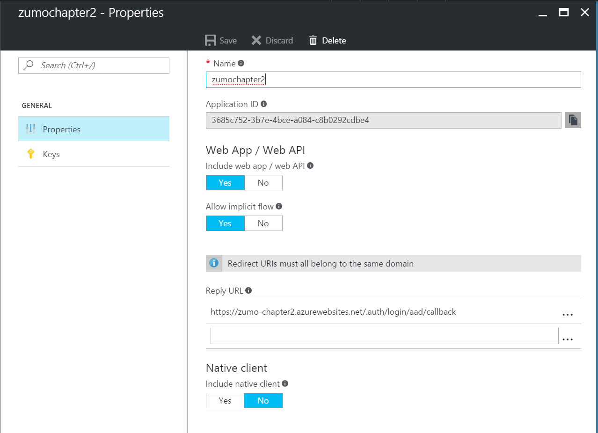
We will also need an App Key.
- Click Keys.
- Click + Generate Key.
- Click Save.
The new App Key will be generated and the display updated. Copy the key that has been generated before you leave this blade as it cannot be re-displayed. The next time you enter this blade, the secret will be obscured with no way of displaying it. We will need the Application ID and App Key later on.
The next step is to create a Sign-in/Sign-up policy. We'll create a policy for signing up with an email address and email confirmation, then signing in with that email address. Close all the blades out to the Settings blade for the B2C tenant, then:
- In the Settings blade, click Sign-up or sign-in policies.
- Click the + Add button.
- Give the policy a name, like emailPolicy.
- Click Identity providers:
- Click Email signup / Local Account (a tick will appear next to the row).
- Click OK.
- Click Sign-up attributes:
- Click Email Address and any other fields you want to gather.
- Click OK.
- Click Application claims:
- Click Email Addresses and any other fields you want to provide to the application.
- Click OK
- Click Create on the Add policy blade.
- Click the policy you just created. It will be named something like B2C_1_emailPolicy. Make a note of the Metadata Endpoint for this policy.
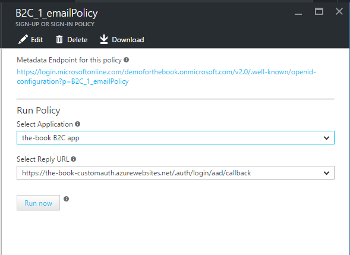
Now that your B2C tenant is configured, you can switch back to your original tenant (by clicking on your name in the top-right corner and selecting the default directory).
To configure the App Service Authentication / Authorization. Open up the Settings blade, then Authentication / Authorization. Ensure the authentication service is turned on. Click on Azure Active Directory. This time, we are going to select the Advanced option. The Client ID is the application ID of your B2C application registration, and the Issuer Url is the Metadata Endpoint for your sign-up policy:
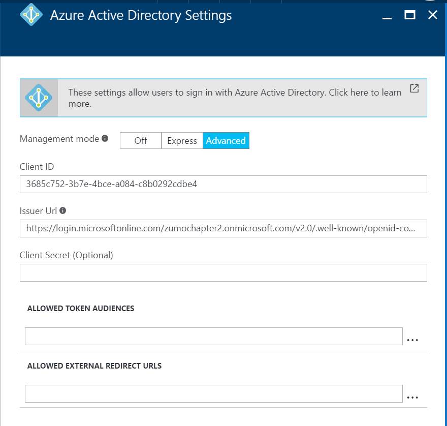
Click OK to configure the authentication server flow, the Save to save the settings. As before, you
can test your server flow by pointing your browser to https://yoursite.azurewebsites.net/.auth/login/aad:
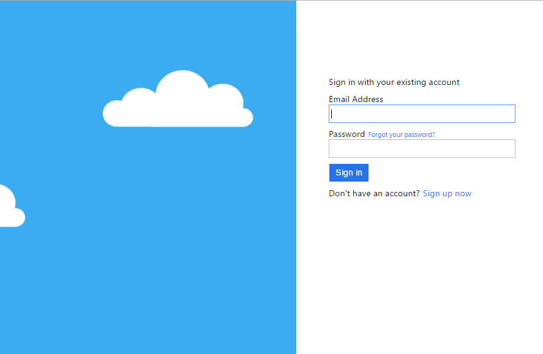
If you have done everything right, you should be able to register an account, get the email verification code, and finally log in to get the happy login page.
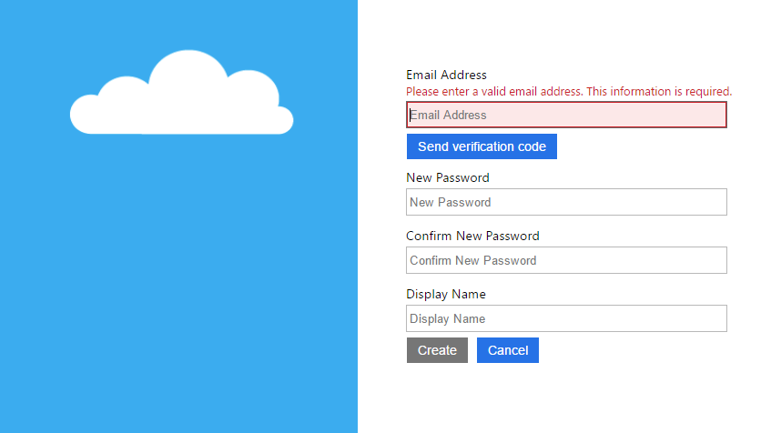
All that is left to do is to configure your app for Azure Active Directory Server Flow. We did that earlier when discussing the Enterprise Authentication flow for the mobile client.
Drawbacks of Azure Active Directory B2C¶
Azure AD B2C is great for storing your users passwords and doing the sign-up and sign-in process for you. There are a couple of reasons why you wouldn't want to use Azure Active Directory B2C.
The most obvious one is that this is built on Azure Active Directory. That means you won't be able to, for example, integrate the Facebook, Google and Twitter identity providers by utilizing their client libraries. You also do not get access to the underlying identity provider token, so you are restricted from accessing the Graph API for the individual providers. Finally, since the AAD B2C identity provider is configured with the AAD provider, you can't use both a B2C provider and a regular AAD provider.
If you just want a sign-up / sign-in flow, then AAD B2C is probably the best way to go. If, however, your plans include integration with other social identity providers, you should consider using the identity providers directly or via separate configuration with the Azure App Service Authentication / Authorization.
Finally, you cannot use a "client-flow" for Azure Active Directory B2C when using it in combination with Azure Mobile Apps. The Azure Mobile Apps will only accept a token from the ADAL library (as we described in the Active Directory section), and Azure Active Directory B2C requires authentication with MSAL (a newer library). We can happily work with server-flow.
Using Third Party Tokens¶
The final method of authenticating a user we are going to look at is a process by which you use a third party authentication token. For example, you may want to authenticate via GitHub or miiCard or using an authentication provider like Auth0 to get some single sign-in capabilities.
Authentication with third party tokens works remarkably similar to the custom authentication case. Instead of a username and password, you pass in the token from the other provider.
To look at this in example form, we are going to implement Auth0 as a provider. Your first stop should be the Auth0 web site to sign up for a developer account. Once you have done that:
- Click the + NEW CLIENT button in the Dashboard.
- Give your app a name, then click Native and then CREATE.
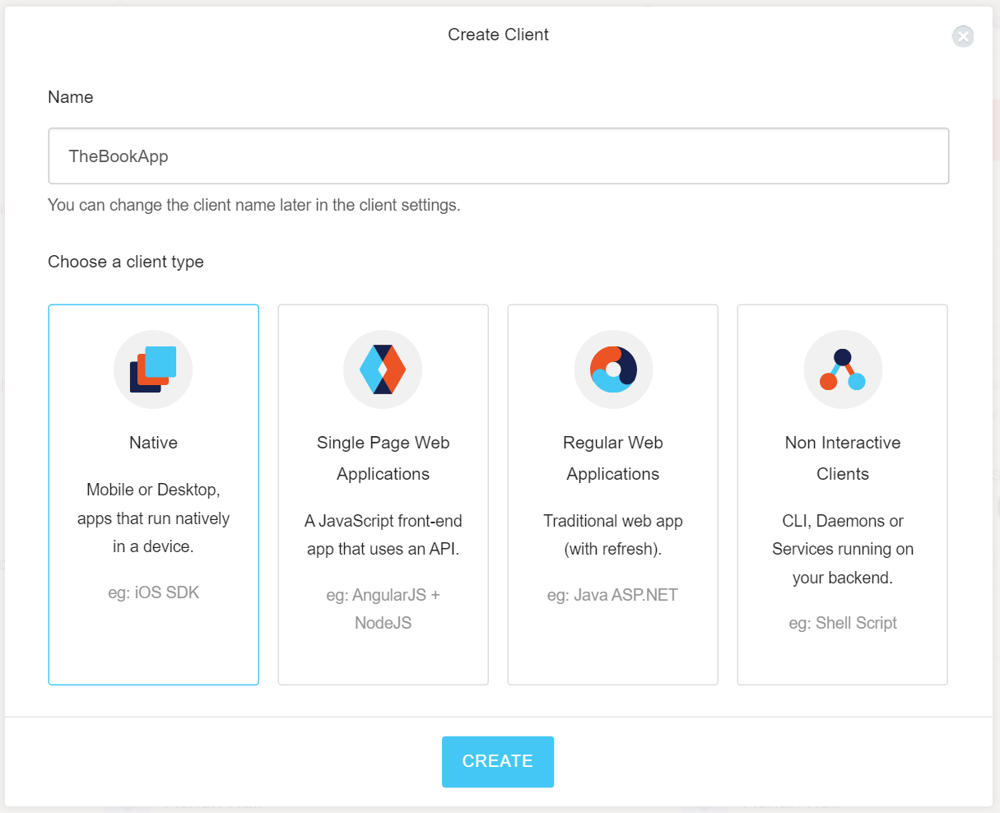
- Click the Xamarin icon to get the Xamarin Quickstart.
- Click Settings.
- Enter the callback URL in the Allowed Callback URLs. The callback URL will be something like
https://_youraccount_.auth0.com/mobileand will be listed in the Quickstart page. - Scroll down to the bottom of the page and click SAVE CHANGES.
- Make a note of the Client ID of the application. You will need it later.
- Click Connections.
- Turn on any connections that you want to use. For this example, ensure you turn on the Username-Password-Authentication and a couple of social providers.
Now that the Auth0 service is configured, we can turn our attention to the mobile client. The Xamarin.Auth0Client is a component, so right-click the Components node of a platform project and select Get More Components.... In the dialog, find the Auth0 SDK, then click Add to App.
For our iOS application, we are going to integrate Auth0 into the Services\iOSLoginProvider.cs:
public async Task LoginAsync(MobileServiceClient client)
{
// Client Flow
var accessToken = await LoginAuth0Async();
var zumoPayload = new JObject();
zumoPayload["access_token"] = accessToken;
await client.LoginAsync("auth0", zumoPayload);
}
public UIViewController RootView => UIApplication.SharedApplication.KeyWindow.RootViewController;
public async Task<string> LoginAuth0Async()
{
var auth0 = new Auth0.SDK.Auth0Client(
"shellmonger.auth0.com",
"lmFp5jXnwPpD9lQIYwgwwPmFeofuLpYq");
var user = await auth0.LoginAsync(RootView, scope: "openid email");
return user.IdToken;
}
The parameters for the constructor to the Auth0Client are your Auth0 domain and client ID. You can retrieve these
from the Auth0 management page for your app. Note that I am requesting the email address. This will become a part
of my ZUMO token when I create it.
Switching our attention to our Backend project, we need a new custom authentication controller. This is located
in Controllers\Auth0Controller.cs:
using System;
using System.Diagnostics;
using System.IdentityModel.Tokens;
using System.Linq;
using System.Security.Claims;
using System.Web.Http;
using Backend.Models;
using Microsoft.Azure.Mobile.Server.Login;
namespace Backend.Controllers
{
[Route(".auth/login/auth0")]
public class Auth0Controller : ApiController
{
private JwtSecurityTokenHandler tokenHandler;
private string clientID, domain;
private string signingKey, audience, issuer;
public Auth0Controller()
{
// Information for the incoming Auth0 Token
domain = Environment.GetEnvironmentVariable("AUTH0_DOMAIN");
clientID = Environment.GetEnvironmentVariable("AUTH0_CLIENTID");
// Information for the outgoing ZUMO Token
signingKey = Environment.GetEnvironmentVariable("WEBSITE_AUTH_SIGNING_KEY");
var website = Environment.GetEnvironmentVariable("WEBSITE_HOSTNAME");
audience = $"https://{website}/";
issuer = $"https://{website}/";
// Token Handler
tokenHandler = new JwtSecurityTokenHandler();
}
[HttpPost]
public IHttpActionResult Post([FromBody] Auth0User body)
{
if (body == null || body.access_token == null || body.access_token.Length == 0)
{
return BadRequest();
}
try
{
var token = (JwtSecurityToken)tokenHandler.ReadToken(body.access_token);
if (!IsValidUser(token))
{
return Unauthorized();
}
var subject = token.Claims.FirstOrDefault(c => c.Type.Equals("sub"))?.Value;
var email = token.Claims.FirstOrDefault(c => c.Type.Equals("email"))?.Value;
if (subject == null || email == null)
{
return BadRequest();
}
var claims = new Claim[]
{
new Claim(JwtRegisteredClaimNames.Sub, subject),
new Claim(JwtRegisteredClaimNames.Email, email)
};
JwtSecurityToken zumoToken = AppServiceLoginHandler.CreateToken(
claims, signingKey, audience, issuer, TimeSpan.FromDays(30));
return Ok(new LoginResult()
{
AuthenticationToken = zumoToken.RawData,
User = new LoginResultUser { UserId = email }
});
}
catch (Exception ex)
{
Debug.WriteLine($"Auth0 JWT Exception = {ex.Message}");
throw ex;
}
}
private bool IsValidUser(JwtSecurityToken token)
{
if (token == null)
return false;
var audience = token.Audiences.FirstOrDefault();
if (!audience.Equals(clientID))
return false;
if (!token.Issuer.Equals($"https://{domain}/"))
return false;
if (token.ValidTo.AddMinutes(5) < DateTime.Now)
return false;
return true;
}
}
public class Auth0User
{
public string access_token { get; set; }
}
}
Note that we are reading two new environment variables. In the Azure App Service, you can read Application Settings by reading the environment variable of the same name. We need to set the AUTH0_CLIENTID to the Client ID of our Auth0 application, and the AUTH0_DOMAIN to the domain of our account. Both of these values need to match the settings in the client. These are not "secure items". If using the client secret (to validate the token), then that would be considered secure and should only appear on the server side.
The validation is that the token passed in is valid (i.e. it has the right audience, issuer and expiry times). In
addition, you should check the validity of the token signature. You can do this by acquiring the token secret and
using tokenHandler.ValidateToken() instead of tokenHandler.ReadToken(). My new token lasts for 30 days. The
ZUMO token that is generated in custom authentication does not have to be the same length as the original token.
You can make it last for as long as you like.